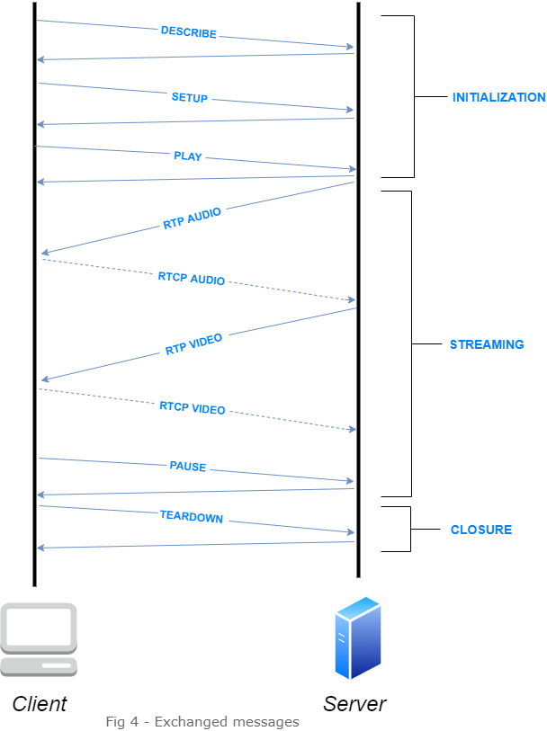
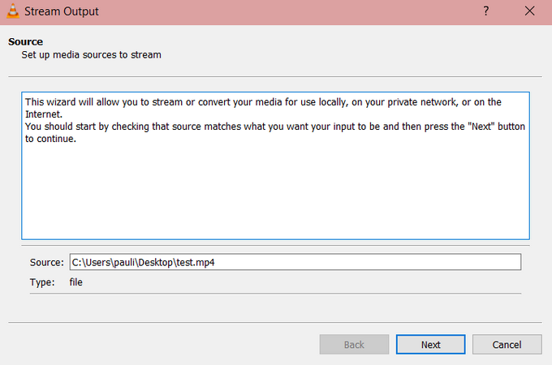
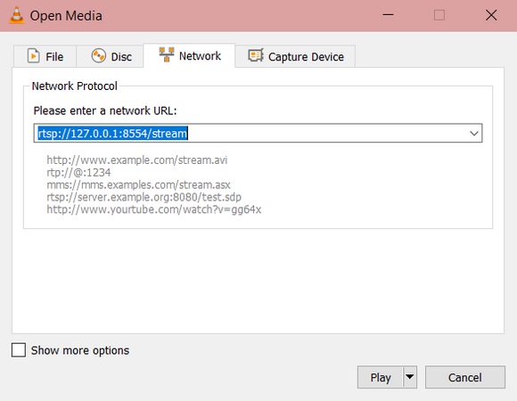

RTSP/RTP
What is RTSP/RTP ?
RTSP and RTP are two protocols that function together to enable the streaming of media, audio or video.
The first version of RTSP submitted to IETF was in 1996 and developed by RealNetworks, Netscape and Columbia University. Its standardization happened in 1998 published as RFC 2326 in 1998, and the second release was in 2016 as RFC 7826 in 2016.
RTSP is an application-level protocol that aims at controlling the streaming of a media. The media can be live-streamed or a stored media. The protocol enables to differentiate sessions of streaming, each session having its own parameters such as unicast or multicast for instance.
It is also relevant to note that the ability to initialize multicast session of streaming make this protocol the principal choice for certain applications such as IP cameras or Television using the internet.
RTP is a protocol that ensures the transportation of media data. It is based upon the use of UDP and provide no bitrate scalability of the streaming. The stream of data is enhanced by the use of a control protocol (RTCP) that monitors the data transmission. RTCP ensures the quality of service and may compensate for delays.
Details on use cases/fields of application
Nowadays RTSP/RTP is very commonly used with video surveillance devices such as IP cameras, it has become the standard for this type of usage. It is designed to efficiently broadcast media content to large groups, making it a relevant choice for applications such as internet radio or television.
Technical specifications : exchanges during a communication

Different phases of a communication :
Describe : This method constitutes the initialization phase of RTSP. During this phase a pair of messages are exchanged.
The first one is sent by the client and aims at demanding a retrieving of the desired media description. It contains the request URL of the media and may also contain an Accept header which specifies the description format the client can process.
The second one contains the description itself. The response contains all the media initialization information.
It is also important to note that, while a media initialization phase is required for any RTSP-based system, the use of the “Describe” method is not mandatory. Two other ways are possible. The first being the use of other protocol such as HTTP or email attachment. The second one being the use of command line or standard input.
Setup : This method constitutes the phase in which the transport mechanism that is going to be used for streaming the media is decided. The information exchanged are the transport initialization information, such as the ports used, the streaming protocol, e.g. RTP, or unicast/multicast.
The first message being sent is sent from the client and contains, under the “transport” header, the parameters the client wishes to use.
The second one sent is the response from the server which contains the transport parameters selected by the server and a session ID that is then going to be used by the client.
Play : This method tells the server to starts sending data using the parameters decided by the SETUP method.
The first message is a play request which contains the range of the media that is going to be played. It may also contain a time parameter, which is going to be the date the playback is started.
The reply message is only sent in the case of on-demand streaming, it contains the range in the media that is going to be played.
RTP audio/video : The RTP audio/video is not a method like Play,Pause,etc... but it defines the beginning of the media stream.
Number of media streams in an RTSP session varies depending on situations as described below :
Case 1 : In a situation where audio codec is disabled and a video stream is requested:
Each RTSP session delivers just one video stream instances at a time.
Case 2 : In a situation where audio codec is enabled and an audio stream is requested:
Each RTSP session delivers just one audio stream at a time.
Case 3 : In a situation where audio codec is enabled and just a video stream is requested:
Each RTSP session delivers two media streams at a time — not only a video stream but also an audio stream.
Pause : This method is used to temporarily interrupt the media stream. The stream can be resumed by sending a play request. Sending a play request without specifying a range to be played will resume the stream at the time it was paused.
The message sent by the client tells the server to stop the stream. It contains the session ID.
The message sent by the server is an acknowledgement of the pause and contains the date it was paused.
Teardown : This request stops the streaming of the media and frees the session ID. the server responds “OK” to the request.
RTCP (Real-time Transport Control Protocol) works hand in hand with RTP. RTCP is used to send control packets. RTCP distinguishes several types of packets called reports: sender report, receiver report, source description, and goodbye. The primary function is to provide feedback on the quality of service being provided by RTP. It transports statistics and information such as octet and packet counts, packet loss, jitter, and round-trip time. It gives information to control QoS parameters.
Advantages or Disadvantages of RTSP
Advantages :
Used internationallyUse HTTP authentication methods, transport and network layer security mechanism
Adapted to all media data
Low-latency (about 2 seconds) and requires no buffering
Allow for multi-servers for multicast and unicast network
Interoperability between clients and servers
Disadvantages :
No more supported by browsersRequire a specific streaming server
Existing projects + links to them
RTSP was standardized by the Multiparty Multimedia Session Control Working Group (MMUSIC WG) of the Internet Engineering Task Force (IETF).
1st version (1998) : RFC 2326
2nd version (2016) : RFC 7826
As can be seen, there is no video web player here. That is why RTSP is no longer directly supported by a video web player.
Until 2015, there was a solution adding RTSP in Chrome with a VLC web plugin but Google removed it.
Nowadays, in order to see a RTSP flow, an external player as VLC is required but it can't be directly included into a web page.
Introduction
Prerequisites
Install VLC via this link : Download VLC
Make sure to have a MP4 video available in the current folder.
Deployment
Demonstration
Version with VLC interface
1. Streaming in RTSP (server)
Open VLC.Select Media then Stream. This window should appear :
Select + Add and select the file you want to stream. The example will be done with an MP4 file.
Then select Stream.
The following window should appear:

Select Next.
Then, on this window chose as New destination RTSP :

You will now have to select the port and the path.
You can chose the 8554 (classic port fort RTSP).
As path, you can add /stream as shown below :
Then chose the transcoding option.
Here for MP4, this is the H.264 codec for the video part and MP3 for the audio part.
Now you stream is available at : rtsp://localhost:8554/stream
2. Watch your video in RTSP (client)
Open another VLC client.To read your rtsp stream : Open a new stream.
Select the path rtsp://localhost:8554/stream.
 Now the video should be watchable.
Command line version
1. Streaming in RTSP (server)
2. Watch your video in RTSP (client)
-Server part deployment -Player deployment For each deployment : pre-requisites step-by-step commands images, if appropriate Github links
The Definitive Guide to HTML5 Video - Silvia Pfeiffer, 2010
Live video in browser - https://medium.com/@cybillshepherd1985/live-video-in-browser-e2a8d534c182, 2018